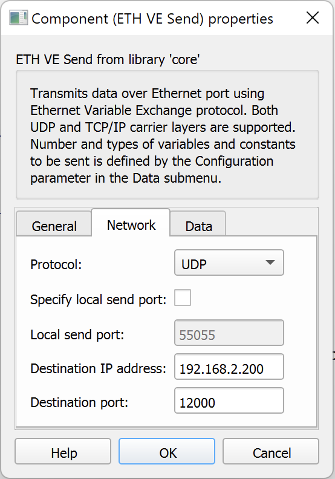
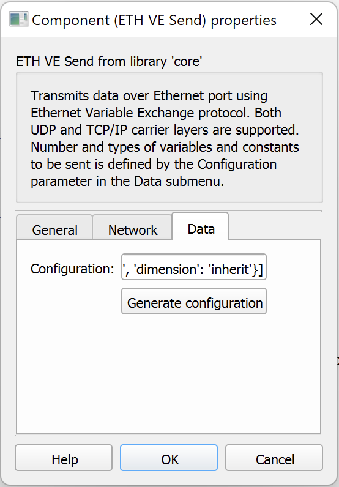
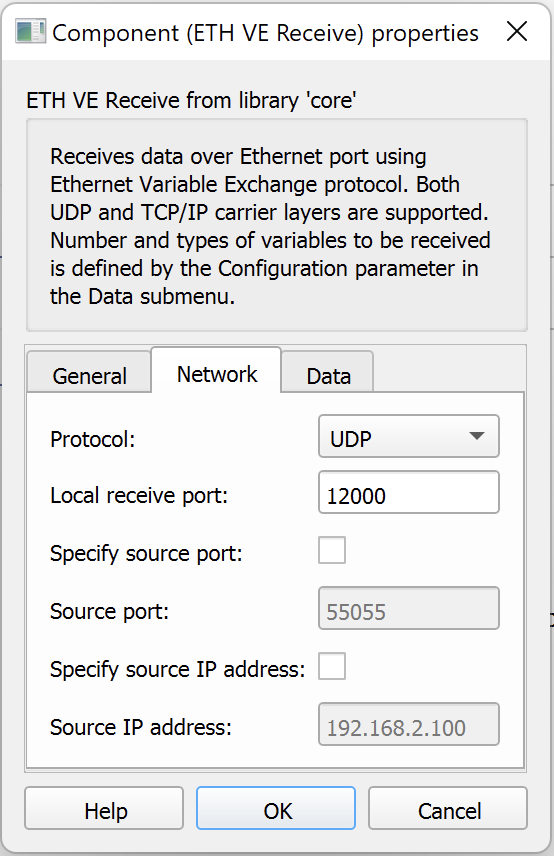
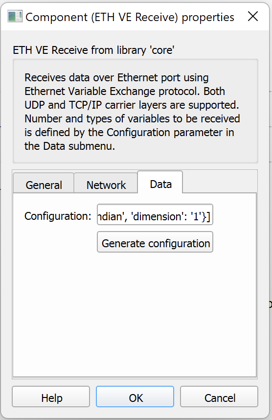

Typhoon HIL Ethernet VE
VILLASnode can interface with Typhoon HIL simulators via their Ethernet Variable Exchange protocol.
On VILLASnode's side this interconnection is realized with the socket node-type and the raw format-type.
Tested Versions
The setup covered on this page has been tested with the following software versions:
- Typhoon HIL Control Center: 2022.1
- VILLASnode: Commit 634d95362a7e776cc8d6b5999bc5c5e83be15870
Limitations
- Only the UDP protocol is supported by VILLASnode
- Sending and receiving of string values is not supported by VILLASnode
- All exchanged signals must use the same number of bytes
- But data-types can be different for each signal
Typhoon example model
VILLASnode ships with an example schematic for the Typhoon HIL control center.
Settings
In this demonstration we use the following settings as an example:
| Setting | Value |
|---|---|
| IP Address of Typhoon HIL target | 192.168.2.100 |
| IP Address of VILLASnode | 192.168.2.200 |
| Subnet Mask | 255.255.255.0 |
| UDP Port Number on both sides | 12000 |
| Number of bytes per signal | 8 (64 bit) |
| Endianess | Little |
Configuration
VILLASnode
This VILLASnode configuration configures a simple loopback of the data send by the Typhoon HIL target back to itself.
# SPDX-FileCopyrightText: 2014-2023 Institute for Automation of Complex Power Systems, RWTH Aachen University
# SPDX-License-Identifier: Apache-2.0
stats = 1.0
nodes = {
typhoon_1 = {
type = "socket"
layer = "udp"
format = {
type = "raw"
endianess = "little"
bits = 64
}
in = {
address = "*:12000"
hooks = (
"stats"
)
signals = (
{ name = "signal0", type="float" },
{ name = "signal1", type="integer" },
{ name = "signal2", type="boolean" },
{ name = "signal3", type="float" },
{ name = "signal4", type="complex" }
)
}
out = {
address = "192.168.2.100:12000" # IP Address of Typhoon HIL target
}
}
}
paths = (
{
# A simple loopback
in = "typhoon_1",
out = "typhoon_1"
}
)
ETH VE Setup properties
| Property name | Value |
|---|---|
| IP address | 192.168.2.100 |
| Subnet mask | 255.255.255.0 |
VE Send properties
Please use the following settings for the VE Send blocks:
| Tab | Property name | Value |
|---|---|---|
| Network | Protocol | UDP |
| Network | Specify local send port | Unchecked |
| Network | Destination IP address | 192.168.2.200 |
| Network | Destination port | 12000 |
| Data | Configuration | See signal configuration section |

VE Receive properties
| Tab | Property name | Value |
|---|---|---|
| Network | Protocol | UDP |
| Network | Local receive port | 12000 |
| Network | Specify source port | Unchecked |
| Network | Specify source IP address | Unchecked |
| Data | Configuration | See signal configuration section |

Signal configuration
You can either configure the signal mapping via Typhoon graphical editor as shown in the screenshot below:
Or alternatively you can copy the following signal configuration into the Configuration property:
[
{'signal_name': 'signal0', 'signal_type': 'variable', 'signal_value': 'From input port', 'data_type': 'real', 'length': '8', 'endianess': 'little_endian', 'dimension': 'inherit'},
{'signal_name': 'signal1', 'signal_type': 'variable', 'signal_value': 'From input port', 'data_type': 'int', 'length': '8', 'endianess': 'little_endian', 'dimension': 'inherit'},
{'signal_name': 'signal2', 'signal_type': 'variable', 'signal_value': 'From input port', 'data_type': 'uint', 'length': '8', 'endianess': 'little_endian', 'dimension': 'inherit'},
{'signal_name': 'signal3', 'signal_type': 'variable', 'signal_value': 'From input port', 'data_type': 'real', 'length': '8', 'endianess': 'little_endian', 'dimension': 'inherit'},
{'signal_name': 'signal4_real', 'signal_type': 'variable', 'signal_value': 'From input port', 'data_type': 'real', 'length': '8', 'endianess': 'little_endian', 'dimension': 'inherit'},
{'signal_name': 'signal4_imag', 'signal_type': 'variable', 'signal_value': 'From input port', 'data_type': 'real', 'length': '8', 'endianess': 'little_endian', 'dimension': 'inherit'}]
Signal type mapping
| VILLAS signal type | Typhoon-HIL signal type |
|---|---|
boolean | uint |
float | real |
integer | int |
complex | use two consecutive real signals |